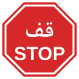
رکیں (اسٹاپ)
لائن پر پوری طرح رکیں، پھر صرف محفوظ ہونے پر آگے بڑھیں۔
متحدہ عرب امارات میں ڈرائیونگ ٹیسٹ کے لیے ضروری تمام 58 ٹریفک نشانات، بالکل ویسے جیسے سڑک پر نظر آتے ہیں، ہر ایک کا مطلب اور آپ کو کیا کرنا ہے۔ یہاں سیکھیں، پھر مفت کوئز سے خود کو آزمائیں۔

لائن پر پوری طرح رکیں، پھر صرف محفوظ ہونے پر آگے بڑھیں۔
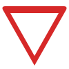
رفتار کم کریں اور جس سڑک میں آپ شامل ہو رہے ہیں اس کی ٹریفک کو راستہ دیں۔
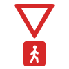
رفتار کم کریں اور یہاں سڑک پار کرنے والوں کو راستہ دیں۔
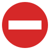
گاڑیوں کا اس سڑک میں داخل ہونا منع ہے۔
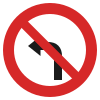
یہاں بائیں جانب مڑنا منع ہے۔

یہاں دائیں جانب مڑنا منع ہے۔
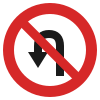
یہاں یو ٹرن لینا منع ہے۔
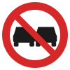
دوسری گاڑیوں کو اوور ٹیک کرنا منع ہے۔
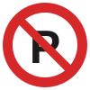
یہاں پارک کرنا منع ہے؛ کھڑی گاڑیاں اٹھائی جا سکتی ہیں۔

یہاں کسی بھی وجہ سے رکنا منع ہے، کسی کو اتارنے کے لیے بھی نہیں۔

آپ ہارن نہیں بجا سکتے۔

اس سڑک پر پیدل چلنا منع ہے۔
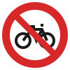
اس سڑک پر سائیکلوں کی اجازت نہیں۔
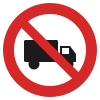
ٹرک اور مال بردار گاڑیوں کی اجازت نہیں۔

موٹر سائیکلوں کی اجازت نہیں۔
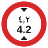
4.2 میٹر سے اونچی گاڑیاں یہاں سے نہیں گزر سکتیں۔
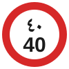
40 کلومیٹر فی گھنٹہ سے زیادہ رفتار منع ہے۔
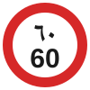
60 کلومیٹر فی گھنٹہ سے زیادہ رفتار منع ہے۔
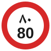
80 کلومیٹر فی گھنٹہ سے زیادہ رفتار منع ہے۔
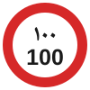
100 کلومیٹر فی گھنٹہ سے زیادہ رفتار منع ہے۔
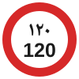
120 کلومیٹر فی گھنٹہ سے زیادہ رفتار منع ہے۔
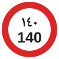
140 کلومیٹر فی گھنٹہ سے زیادہ رفتار منع ہے۔
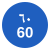
اس سڑک پر 60 کلومیٹر فی گھنٹہ سے کم رفتار پر نہ چلائیں، سوائے اس کے کہ ٹریفک یا حالات کی وجہ سے ایسا کرنا غیر محفوظ ہو۔
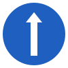
آپ کو سیدھا جانا ہوگا۔
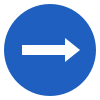
آپ کو دائیں جانب مڑنا ہوگا۔
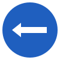
آپ کو بائیں جانب مڑنا ہوگا۔
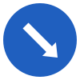
درمیانی پٹی یا رکاوٹ کے دائیں جانب سے گزریں۔
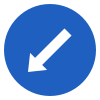
درمیانی پٹی یا رکاوٹ کے بائیں جانب سے گزریں۔
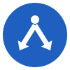
آپ درمیانی پٹی کے کسی بھی جانب سے گزر سکتے ہیں۔
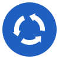
تیروں کی سمت میں (گھڑی کی سوئیوں کی الٹی سمت) گول چکر کے گرد گھومیں۔
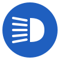
یہاں ہیڈ لائٹس جلانا ضروری ہے، مثلاً سرنگ سے پہلے۔

آگے بائیں جانب موڑ ہے: موڑ سے پہلے رفتار کم کریں۔

آگے دائیں جانب موڑ ہے: موڑ سے پہلے رفتار کم کریں۔

آگے ایک کے بعد ایک دو موڑ ہیں، پہلا موڑ نشان میں دکھائی گئی سمت میں ہے: رفتار کم کریں۔
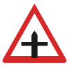
آگے چوراہا ہے: رفتار کم کریں اور رکنے کے لیے تیار رہیں۔
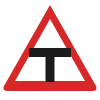
سڑک آگے ٹی جنکشن پر ختم ہوتی ہے: آپ کو رکنا یا راستہ دینا ہوگا۔
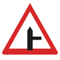
دائیں جانب سے ایک ذیلی سڑک ملتی ہے: وہاں سے نکلنے والی ٹریفک پر نظر رکھیں۔
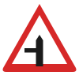
بائیں جانب سے ایک ذیلی سڑک ملتی ہے: وہاں سے نکلنے والی ٹریفک پر نظر رکھیں۔
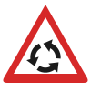
آگے گول چکر ہے: رفتار کم کریں اور پہلے سے صحیح لین میں آ جائیں۔
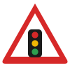
آگے ٹریفک سگنل ہے: رکنے کے لیے تیار رہیں۔
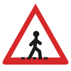
آگے پیدل گزرگاہ ہے: رفتار کم کریں اور رکنے کے لیے تیار رہیں۔

اسکول کے قریب بچے سڑک پار کر رہے ہو سکتے ہیں: رفتار بہت کم کر دیں۔
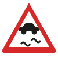
سڑک پر پھسلن ہو سکتی ہے: رفتار کم کریں اور زور سے بریک لگانے سے بچیں۔
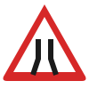
آگے سڑک تنگ ہو رہی ہے: رفتار کم کریں اور سامنے کی ٹریفک کا خیال رکھیں۔
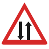
آگے ٹریفک دونوں طرف چلتی ہے: اپنی جانب رہیں۔

آگے اسپیڈ بریکر ہے: اس سے پہلے رفتار کم کریں۔
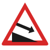
آگے تیز اترائی ہے: چھوٹا گیئر لگائیں اور آہستہ آہستہ بریک لگائیں۔
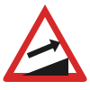
آگے تیز چڑھائی ہے: بروقت چھوٹا گیئر لگائیں۔
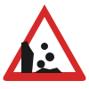
پتھر گر سکتے ہیں یا سڑک پر پڑے ہو سکتے ہیں: احتیاط سے گاڑی چلائیں اور نہ رکیں۔
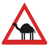
سڑک پر اونٹ یا دوسرے جانور ہو سکتے ہیں: رفتار کم کریں اور ہارن نہ بجائیں۔
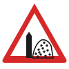
ریت اڑ کر سڑک پر آ سکتی ہے: رفتار کم کریں، ٹائروں کی گرفت کم ہوتی ہے۔

آگے سڑک پر کام ہو رہا ہے: رفتار کم کریں اور نشانات پر عمل کریں۔
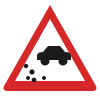
سڑک پر کھلی بجری ہے: رفتار کم کریں اور فاصلہ رکھیں۔

آگے سڑک ناہموار ہے: رفتار کم کریں۔

آگے ایسا خطرہ ہے جو کسی اور نشان میں نہیں دکھایا گیا: رفتار کم کریں اور ہوشیار رہیں۔
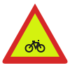
آگے سائیکل سوار سڑک پار کر سکتے ہیں: رفتار کم کریں اور انہیں جگہ دیں۔
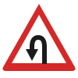
آگے یو ٹرن کی جگہ ہے: گاڑیوں کے آہستہ ہونے اور مڑنے کی توقع رکھیں۔

یہاں پارک کر سکتے ہیں، دکھائے گئے اوقات یا فیس کی پابندی کے ساتھ۔
LaneWise میں سینکڑوں مزید سوالات، سرکاری طرز کے وقت والے ماک ٹیسٹ، خطرہ پہچاننے کی مشق اور 3D ڈرائیو ہے۔ مفت، اردو، انگریزی اور عربی میں۔